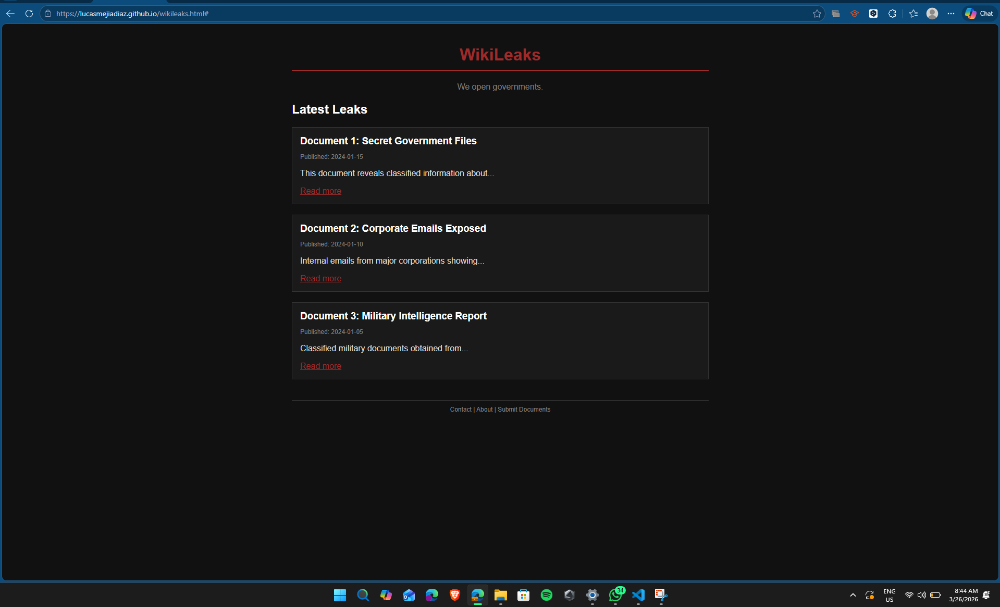

Imaginalo como el esqueleto de una casa. No tiene pintura ni muebles, pero define dónde van las paredes y las puertas. Son las piezas de construcción básicas de cualquier página en internet. [Referencia: MDN Web Docs - HTML Basics]
El Head es como el cerebro: ahí se guardan las ideas y reglas (el título, el idioma) que el usuario no ve directamente. El Body es el cuerpo: todo lo que sí puedes ver y tocar, como los textos e imágenes. [Referencia: W3Schools - HTML head]
[Referencia: MDN Web Docs - HTML Semantics]
Lista sin orden (Puntos):
Lista con orden (Números):
[Referencia: W3Schools - HTML Lists]
| Nombre | Hobby |
|---|---|
| Lucas | Hacer webs feas |
[Referencia: W3Schools - HTML Tables]
Es el maquillaje y la ropa del esqueleto. Sirve para que la página no se vea solo como texto aburrido y le demos colores, tamaños y posiciones. [Referencia: MDN Web Docs - CSS Basics]
[Referencia: MDN Web Docs - Adding CSS]
Un Selector es a quién le vas a cambiar el look (ej: "todos los títulos"). La Regla es qué le vas a hacer (ej: "ponlos de color verde"). [Referencia: W3Schools - CSS Syntax]
[Referencia: MDN Web Docs - CSS Selectors]
Done (Ya sé cómo jugar y ganar). [Referencia: Práctica en clase]
Un ID es como tu CURP o DNI: solo hay uno. Una Clase es como un uniforme: muchos pueden usarlo. En CSS los usamos para decirle a la computadora exactamente a qué parte del texto queremos darle color. [Referencia: W3Schools - CSS Class and ID]
Todo en la web es una caja. Tiene contenido, un espacio interno (padding), un borde y un espacio por fuera (margin). [Referencia: MDN Web Docs - The box model]
Son reglas que dicen: "Si la pantalla es chiquita como un celular, cambia el diseño". Sirven para que la web se vea bien en cualquier aparato. [Referencia: W3Schools - CSS Media Queries]
Flex: Imagina una fila de personas que se acomodan solas si alguien se quita. Es para alinear cosas en una sola dirección. [Referencia: CSS-Tricks - A Complete Guide to Flexbox]
Grid: Es como una red de pescador o una hoja de Excel. Puedes acomodar cosas arriba, abajo, a la izquierda y derecha al mismo tiempo. [Referencia: CSS-Tricks - A Complete Guide to Grid]
Reto: Escribe el código HTML para incrustar un video de YouTube en tu página web sin usar la etiqueta "video". [Referencia: Invento propio]
Aquí está la captura de pantalla de mi página clonada usando un Framework:

[Referencia: Proyecto personal]